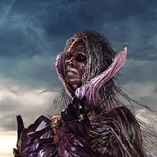

旁白
打铁的雷尼加兹
熟练的麦道夫
晦冥的卡里昂
梅维亚的罗莎贝娜
教戒师克隆威尔
林德的莉絮
逐出门墙的菲尔金
卖矿石的克洛亚娜
行商梅伦提拉
卖防具的玛夫穆蓝
可爱的夏拉格儿
架梯子的吉里甘
孤独的葛瓦蓝
守墓人亚格德蓝
宫廷魔法师那瓦蓝
宰相灵魂贝拉格
温格
卖武器的欧尼斐克斯
奥拉斐斯的史垂德
青骑士格拉因德克
矮小的格雷年
拉‧卡纳尔马格赫拉德
潜身黑暗的格蓝达尔
钟卫
鼠王
朝圣绿衣人夏娜洛特
失去心的索丹
退役的防火女
米利贝丝
米勒的鲁卡提耶
乌格的凡荷特
画地图的凯尔
放浪的克雷顿
亲切的培特
米勒法妮特
蝎人塔克
王国队长多拉蒙德
原罪探求者安第尔
汎克拉德
杜娜湘卓

污秽女王艾雷娜
煤炭新娘娜德拉
沉默巫女亚尔舒娜
古龙
德妮与提洛
贝尔德里克